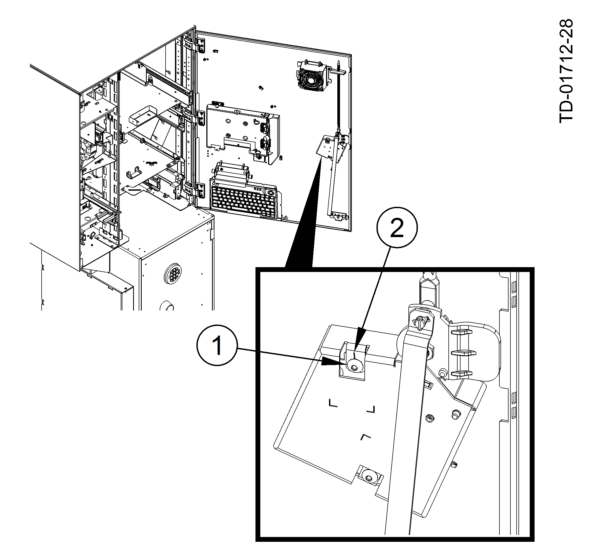
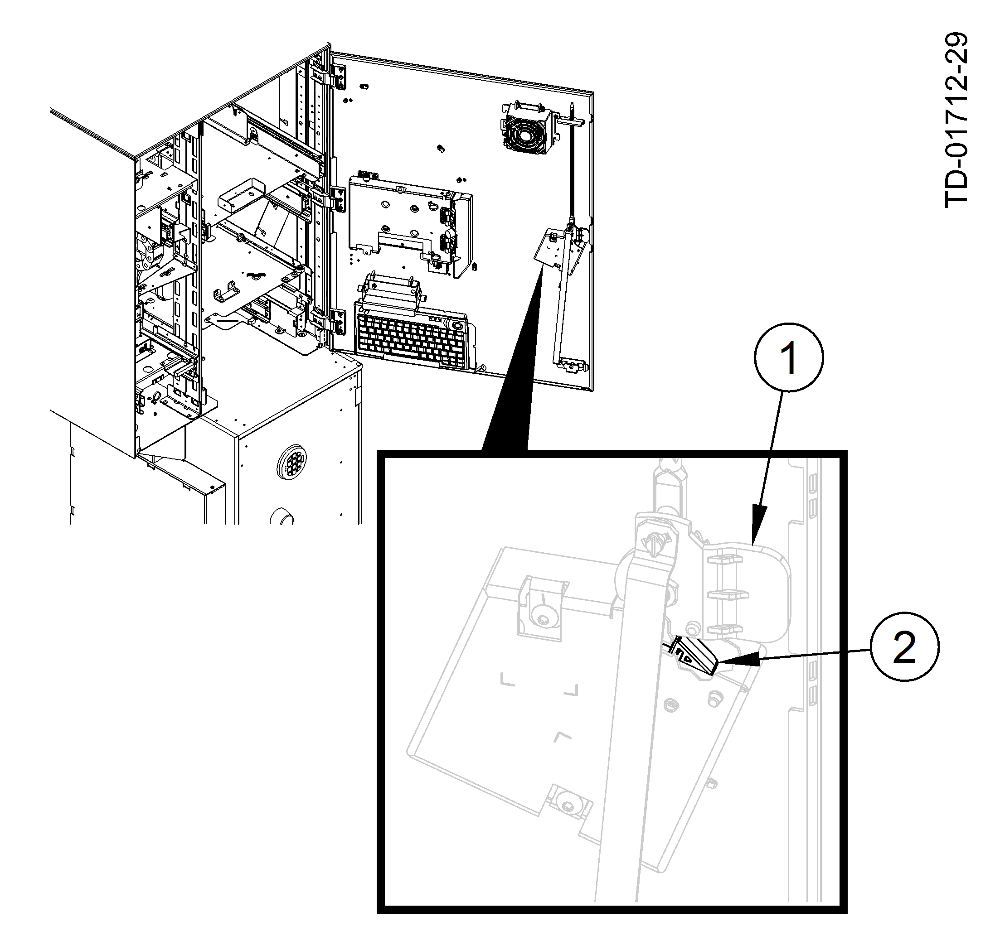
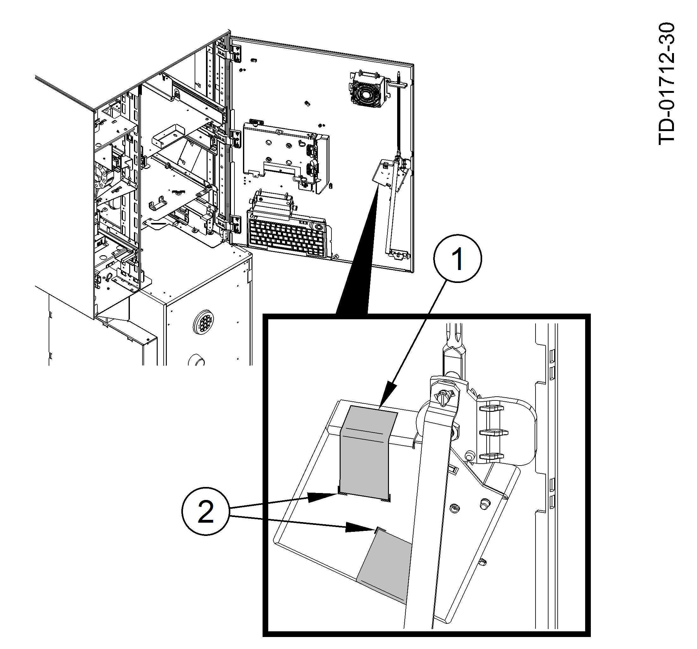
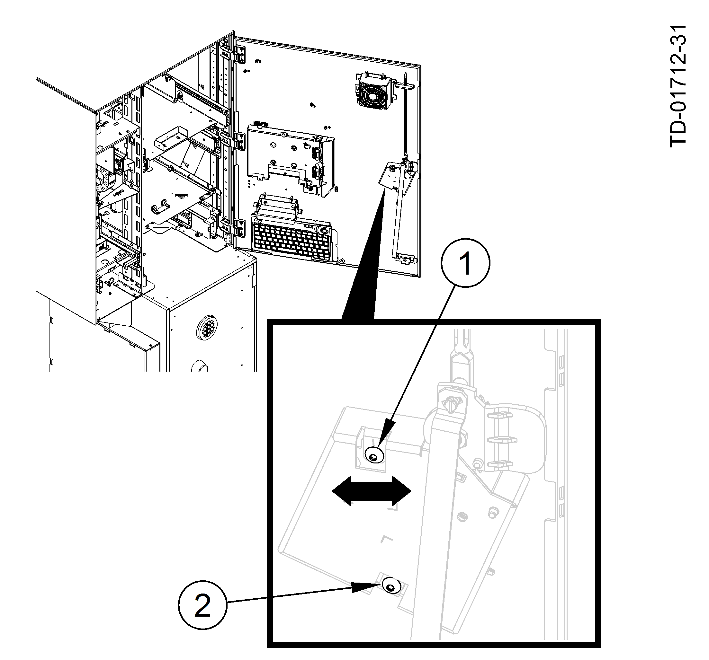

Adjust the electro-mechanical (EM) lock according to the following steps.
Set the screw to the middle position so that it points to the marking of the fastening point (Set the Screw ).
Set the Screw
1
Screw
2
Mark
Make sure the EM-lock solenoid is fired and in contact with the locking lever of the upper chassis key lock (Locking Lever ).
Locking Lever
1
Upper chassis lock locking lever
2
EM-lock solenoid
Align two strips of tamper-proof tape, with the markings on the housing and attach the tape over the openings of the adjusting screws (Tape ).
Tape
1
Tape
2
Markings on the housing
The electro-mechanical chassis lock is adjusted.
NOTICE
If the upper chassis key can still be turned, then the electro-mechanical lock is not correctly aligned. Readjust the electro-mechanical lock.
If the electro-mechanical chassis lock is not set correctly, the upper chassis door key can still be turned, and the EM-lock must be readjusted.
Loosen the two adjusting screws. Move the electro-mechanical chassis lock slightly to the left or right until the desired position is reached (Adjusting the Lock ) and the upper chassis door key can no longer be turned.
Adjusting the Lock
1
Adjusting screw
2
Adjusting screw
After the EM-lock is adjusted correctly, attach two strips of tamper-evident adhesive tape on the housing to cover the screws (Tape ).
 If the upper chassis key can still be turned, then the electro-mechanical lock is not correctly aligned. Readjust the electro-mechanical lock.
If the upper chassis key can still be turned, then the electro-mechanical lock is not correctly aligned. Readjust the electro-mechanical lock.